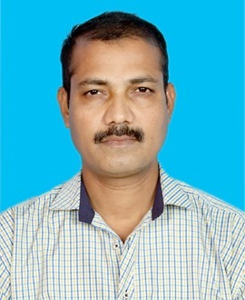

Gopal Krishna Meher

Summary:-
Customer-focused professional with 2 years of experience in service center operations. Skilled in handling inquiries, resolving issues, and delivering excellent support. Strong communicator with a focus on efficiency and customer satisfaction.
Education :-
- Bachelor of Commerce (B.Com)
Rajendra College, Balangir
Year of Graduation: [1996]
- 12th Standard (CHSE)
Roth College, Agalpur
Year of Completion: [1993]
- 10th Standard (BSE)
Agalpur High School, Agalpur
Year of Completion: [1991]
Work experience:-
2 years of work experience in CSC center.
Skills:-
- Photoshop
- Basic Computer Skills(MS office,Email)
- Data Entry
- Time Management
- Multitasking
- costomer service
- Communication skills (verbal and written)
Awards and certificates:-
- Business Correspondent Certificate
- Certificate for Soliciting insurance Business As a VLE-Insurance
- CSC ceter Certificate
Others:-
My Hobbies -
- Travelling
- Reading books/Newspaper
Contact Me